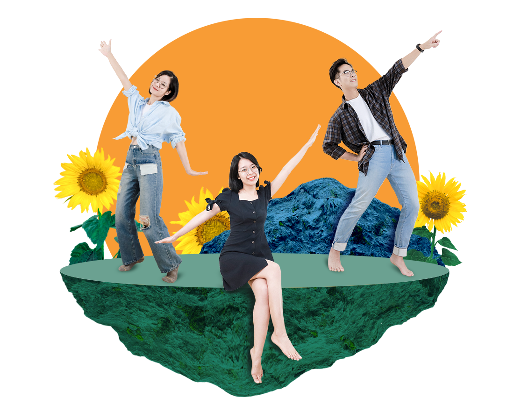

Môi trường
làm việc
Trong nỗ lực để đạt đến sứ mệnh của Sun*, việc tạo ra một môi trường – nơi tất cả các thành viên có thể phát huy điểm mạnh riêng là tối quan trọng. Vì thế, điều đầu tiên tôi mong tất cả lãnh đạo của Sun* đặc biệt lưu ý trong việc thiết lập mục tiêu của mình, đó là vấn đề động lực, sự an tâm về mặt tâm lý và sự phát triển của nhân viên.

#ActiveChallenge: Chủ động tạo ra công việc thử thách liên tục cho bản thân
Sun* là một môi trường luôn đề cao những ý tưởng đổi mới, sáng tạo. Với đội ngũ “lãnh đạo phục vụ” sẵn sàng thúc đẩy tiềm năng và động lực của các thành viên, Sun* luôn đồng hành cùng những con người tài năng thực hiện đam mê của chính mình.
Để những đam mê ấy trở thành thành tựu, mỗi Sunner đều chủ động tạo ra những công việc thú vị, mang tính thử thách cho bản thân thông qua sự nỗ lực và thấu hiểu tổ chức, thay vì chờ đợi người khác nói rằng mình cần làm gì và làm như thế nào.
#ActiveLearn: Học tập trong một tổ chức có đầy đủ các thành tố: môi trường học tập, cơ hội học tập, năng lực học tập.
Với triết lý lấy sự phát triển con người là trọng tâm, Sun* chủ động xây dựng một tổ chức học tập toàn diện và tính cá nhân hóa cao, từ đó thúc đẩy thành viên có hứng thú, động lực với việc học hỏi:
- Môi trường học tập: Sunners được cung cấp một không gian tối ưu với nền tảng trải nghiệm học tập, thư viện tài liệu đồ sộ, khung năng lực tiêu chuẩn, kế hoạch đào tạo được nâng cấp liên tục và văn hóa Coaching & Sharing không ngừng nghỉ.
- Cơ hội học tập: Cùng những người đồng nghiệp xuất sắc, Sunners được “may đo” kế hoạch học tập với những khóa học online, offline đa dạng, các gói tài trợ học tập uy tín và cơ hội thực hành lý thuyết đầy tính thử thách trong công việc của bản thân.
- Năng lực học tập: Sunners được trang bị phương pháp học tập thông minh với công cụ IDP – Individual Development Plan cùng mô hình 70-20-10 (học tập từ công việc thực tế – học tập từ người khác – học tập từ sách vở lý thuyết), giúp việc học có tính định hướng và phù hợp với từng cá nhân.
#ActiveJoy: Sống trong môi trường văn hóa hướng tới giá trị nhân văn, và hạnh phúc cho mọi người

Suy nghĩ và cảm nhận của mỗi thành viên là yếu tố quan trọng hàng đầu trong bất cứ việc ra quyết định nào của Sun*. Sunners được nuôi dưỡng và phát triển thế mạnh của mình, tạo dựng sự an tâm bởi sự quan tâm chân thành nhất không chỉ tới mỗi cá nhân mà cả với gia đình của mình.
Xuất phát từ sự chân thành ấy, mọi hoạt động kết nối, xây dựng văn hóa tổ chức đều hướng tới mục tiêu chung là tạo ra hạnh phúc, niềm vui và sự gắn bó của Sunners. Dù ở vị trí nào, mỗi thành viên luôn tự hào mình là một Sunner!
Join us & MAKE AWESOME THINGS THAT MATTER.
Sun* luôn tìm kiếm những con người đam mê thử thách để tạo nên những giá trị
"Awesome".
Cùng trở thành một phần của Sun* ngay hôm nay.